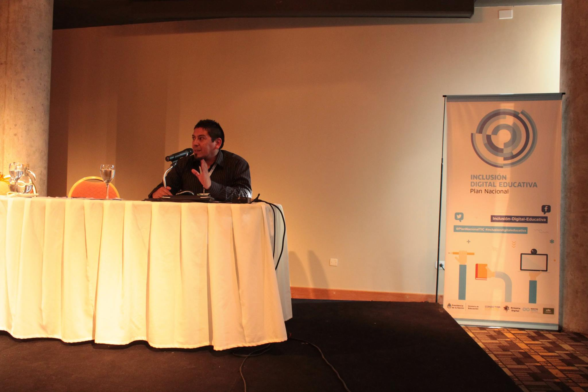
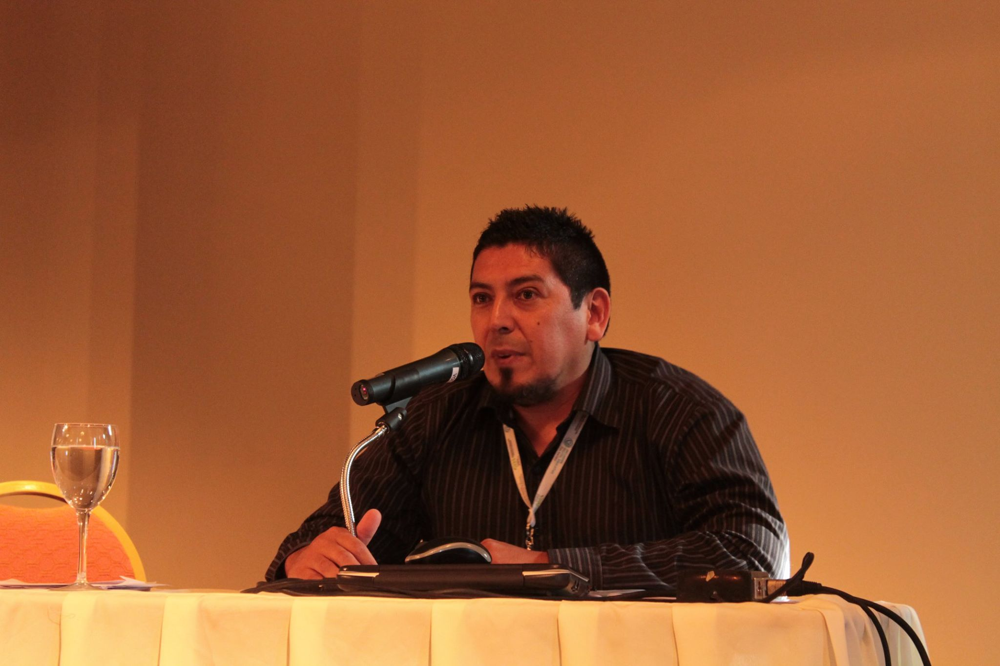

Docencia
Enseñar como acto creativo
Tecnología, territorio y pensamiento crítico en el aula

Enseñar es abrir preguntas, no cerrar respuestas. El aula es un espacio de experimentación donde la tecnología sirve al pensamiento, no al revés.
Sobre mi práctica docente
Soy profesor de nivel secundario en El Bolsón, Patagonia Argentina. Trabajo con adolescentes en un entorno donde los bosques, los ríos y la montaña no son paisaje de fondo sino parte del aula. Mi práctica docente integra la tecnología como herramienta de pensamiento crítico, expresión creativa y construcción colectiva de conocimiento.
No se trata de "usar tecnología en el aula" como un fin en sí mismo. Se trata de crear condiciones para que los estudiantes piensen, cuestionen, creen y se expresen, usando las herramientas que tienen a mano —digitales o no— como medios para llegar más lejos. En un contexto como la Patagonia, donde las distancias son grandes y los recursos limitados, la tecnología bien usada puede ser un igualador poderoso.
Enfoque pedagógico
Ejes de trabajo
Cuatro ejes que atraviesan mi práctica docente cotidiana.
Pensamiento crítico
Cuestionar para comprender
Fomentar la capacidad de analizar, cuestionar y construir criterio propio frente a la información y la tecnología. En un mundo saturado de contenido, la habilidad más valiosa no es acceder a la información sino evaluarla: distinguir fuentes, detectar sesgos, formular preguntas propias. Trabajo especialmente la alfabetización digital crítica y el análisis de medios.
Tecnología con propósito
Medios, no fines
Usar herramientas digitales no como un fin en sí mismo sino como medios para crear, investigar, comunicar y resolver problemas reales. Desde edición de video y audio hasta programación básica, inteligencia artificial y herramientas colaborativas. La pregunta no es "qué tecnología usamos" sino "qué queremos lograr y qué herramienta nos ayuda".
Saberes territoriales
Enseñar desde el lugar
Enseñar desde y para el territorio. Los saberes locales, la naturaleza, la historia de la comarca y la cosmovisión mapuche como punto de partida para el aprendizaje. No se trata de "contenido regional" como anexo sino de una perspectiva pedagógica: el lugar donde vivimos es el primer texto que leemos, el primer problema que resolvemos, el primer mundo que necesitamos entender.
Creación colectiva
El aula como taller
Proyectos colaborativos donde los estudiantes son protagonistas del proceso de aprendizaje. Documentales, podcasts, instalaciones, investigaciones comunitarias, intervenciones artísticas. El aula como taller donde se produce conocimiento, no solo se consume. Los estudiantes como autores, no como receptores.
Contexto
El Bolsón, Patagonia
Un aula entre bosques y montañas
42° latitud sur
Trabajo en un entorno rural-urbano rodeado de bosques nativos y montañas, donde la relación con el territorio atraviesa cada aspecto de la vida cotidiana. La Patagonia no es solo paisaje: es cosmovisión, historia y comunidad viva.
El Bolsón es una localidad de la comarca andina del paralelo 42°, en la provincia de Río Negro. Un lugar donde conviven culturas diversas —mapuche, criolla, de migrantes internos y externos—, donde la naturaleza no es un recurso turístico sino el entorno vital de la comunidad, y donde enseñar implica siempre dialogar con el territorio.
Este contexto no es una limitación: es una potencia. Los proyectos más significativos que he desarrollado con mis estudiantes nacen de preguntas locales, de problemas concretos del lugar, de la curiosidad por entender el mundo que habitan.

Conexiones
Docencia, arte e investigación
Mi práctica docente no está separada de mi trabajo como artista e investigador: se alimentan mutuamente. La experiencia de crear obras inmersivas y de investigar las Humanidades Digitales decoloniales me da herramientas y perspectivas que llevo al aula. Y al revés: las preguntas que surgen con los estudiantes, la energía de los adolescentes, la honestidad brutal de un chico de 15 años que dice "esto no lo entiendo" o "esto no me importa" son el mejor correctivo para cualquier exceso teórico.
Arte en el aula
El lenguaje artístico como forma de conocimiento. Proyectos donde los estudiantes usan video, sonido e instalación para investigar y comunicar.
Investigación aplicada
Los conceptos de las Humanidades Digitales llevados a proyectos accesibles: archivos escolares, mapeos comunitarios, documentales participativos.
IA en educación
Explorar el uso crítico y creativo de la inteligencia artificial con los estudiantes. No como magia ni amenaza sino como herramienta que hay que entender para usar bien.
El aula es el laboratorio más honesto que conozco. Si algo no funciona ahí, no funciona en ningún lado.